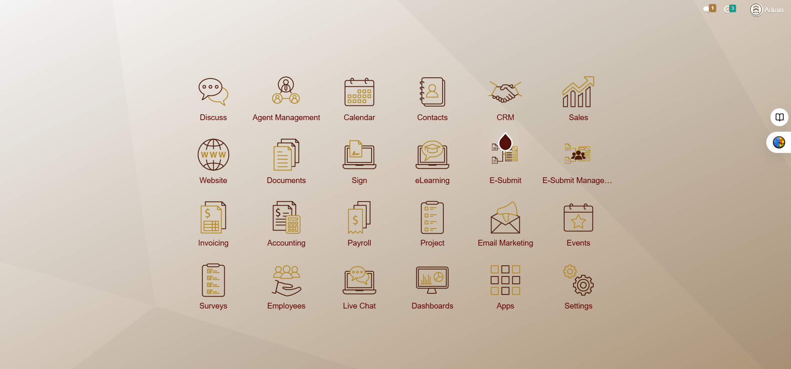
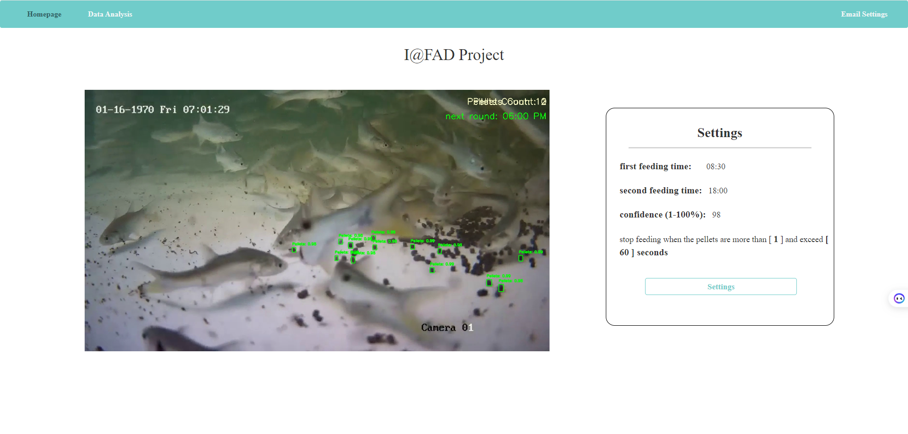

01
Frontend Development
Designing simple and friendly websites that are easy to use and understand.
Fresh IT Graduate & Aspiring Developer
I enjoy creating websites, applications, and solutions that are simple, easy to use, and designed with a clear purpose.

ABOUT ME
I’m a responsible and motivated IT graduate who enjoys learning, developing new skills, and taking on new experiences.
I adapt well to changes and believe that good interpersonal skills and teamwork are important. I am also well-organized when it comes to planning and managing my time. Taking the initiative to identify and solve problems without being asked is one of my strengths. I have a strong interest in programming and technology, with a focus on Node.js for backend development, Jinja for templating in Python-based applications, HTML and CSS for building web interfaces, and JavaScript for creating interactive and dynamic content.
I also place great importance on UX design, with a focus on creating websites that are user-friendly, visually appealing, and easy to navigate. In addition, I have explored basic networking, giving me a solid foundation in understanding how devices and networks communicate. I am always eager to learn more, apply my knowledge to real-world projects, and continue growing as a versatile and adaptable problem solver.
SKILLS

Designing simple and friendly websites that are easy to use and understand.
Building simple and reliable applications, APIs and AI solutions.
Working with data and connecting applications to databases.
Tools I use to design, build and manage my projects.
Exploring AI tools to build simple and practical solutions.
PROJECTS

01WEB DEVELOPMENT · INTERNSHIP
Enhanced the company's Odoo website during my NYP internship by developing an agent management system, digital business cards, an e-submit workflow, and calendar reminders for rental agreements. These features helped simplify administrative tasks and reduce manual work.

02AI & WEB DEVELOPMENT · 2026
A Final Year Project developed at Nanyang Polytechnic to automate fish feeding using AI. I worked on improving pellet detection, preparing training data, and testing the AI under different conditions. I also developed a user-friendly web interface for managing feeding schedules and limits, with feeding activity charts and email alerts.
04 / CONTACT ME
If you would like to know more about me, my projects or what I’m learning, feel free to reach out.